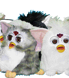
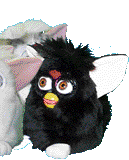

N.E.W.F.E.G.
Member Bios
 Furbish finally decoded?
Furbish finally decoded?  Store
Store Hans Nelson
Chairman of the Door County Chapter
Hans Nelson has been the Chairman of the Door County Chapter of the Northeast Wisconsin Furby™ Enthusiast Group since December of 2000.
At 30 years old, Hans is the youngest Chairperson of the Northeast Wisconsin Furby™ Enthusiast Group chapters.
Hans has had a love of furbys since the onset. Initially fascinated by their
technology biology, he found the movements and mannerisms charming. As time
passed, Hans came to appreciate Furbys in a different light. He found the uncanny expression
adorable, and the now-antiquated technology biology of the creatures
nostalgic.
Hans resides in Sturgeon Bay, in the beautiful Door County, and grew up there. He has a Bachelor's Degree in Fine Arts, and is focusing on creating relief prints from linoleum and wood. Hans has displayed several prints locally to acclaim.
While Hans has yet to create a Furby™-centric print, who knows what the future holds? :)
▶ TRIVIA: Hans' first Furby™ was a grey spotted Furby™ named Koh-Koh.
Hans' favorite furbish words: "tee-wee-lah," "doo-oo-tye?," and "doo?"
"Furbys remind me of the 90's, and I really like that."
Hans Nelson, Chairman of the Door County Chapter of the Northeast Wisconsin Furby™ Enthusiast Group
hans@hsnelson.com
Hans Nelson
with a goat.
Edi The Dog
Edi laying her
head on Hans' lap.
Beloved Friend
Edi is Hans Nelson's pet dog. She was born in February of 2017, and is currently 5 years old! Wow, time sure flies! :O
Edi is thought to be 50% chihuahua (mother) and 25% Jack Russell Terrier, 25% australian cattle dog (father). Regardless, she is 100% cute!!
Edi is fairly well-behaved and spends most of her day sleeping or barking at passers-by.
Edi doesn't know what a Furby™ is, but in a way she is Hans' most important Furby™. She even has big ears like one!
▶ TRIVIA: Edi's best friend is Helka, Hans' sister's dog.
Edi's favorite furbish words (probably): "ay-tay," "noo-loo," and "dah-boo."
 

 Built with Bootswatch
Built with Bootswatch